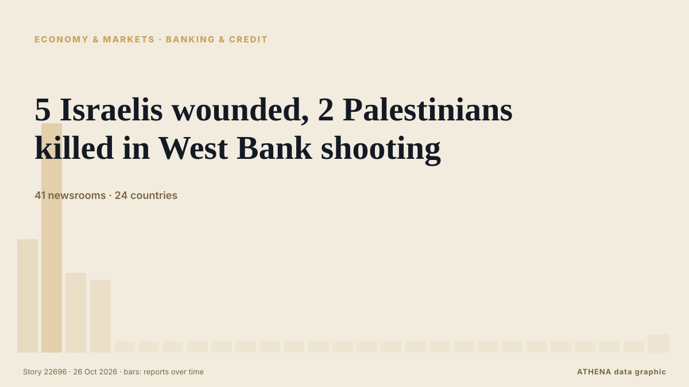

5 Israelis wounded, 2 Palestinians killed in West Bank shooting

The Israeli military reported the killing of two suspected attackers following a shooting incident near the Judea Junction. из Arab News
Независимые источники: 41 издание в 24 странах, с 23 окт.; первым сообщил Arab News; освещение идёт на спад. ATHENA оценивает риск как высокий (6.2/10), прежде всего из-за тяжести описываемого ущерба и географического и отраслевого охвата. Уверенность — 87 % (высокая); подтверждают независимые источники: 41 издание, средняя надёжность источников — 77 %.
Почему это важно: Мониторинг следит за конфликтом вокруг Израиля, Газы, Западного берега и Ливана — военными событиями, гуманитарной ситуацией и дипломатией — так, как их освещает мировая пресса.
Что изменилось: 1 новое сообщение за 24 часа до 26 окт..
Первый заголовок: Israel demolishes homes in West Bank after fatal attack
Заголовки приводятся на английском языке, как они были опубликованы.
Коротко в цифрах
Отобрано, оценено и написано по опубликованной методологии ATHENA. Ни один редактор не вмешивается в отдельные события. Как это создаётся ›
| 23 Oct 05:06 UTC | 15 |
|---|---|
| 23 Oct 08:06 UTC | 32 |
| 23 Oct 11:06 UTC | 10 |
| 23 Oct 14:06 UTC | 9 |
| 23 Oct 17:06 UTC | 0 |
| 23 Oct 20:06 UTC | 0 |
| 23 Oct 23:06 UTC | 0 |
| 24 Oct 02:06 UTC | 0 |
| 24 Oct 05:06 UTC | 0 |
| 24 Oct 08:06 UTC | 0 |
| 24 Oct 11:06 UTC | 0 |
| 24 Oct 14:06 UTC | 0 |
| 24 Oct 17:06 UTC | 0 |
| 24 Oct 20:06 UTC | 0 |
| 24 Oct 23:06 UTC | 0 |
| 25 Oct 02:06 UTC | 0 |
| 25 Oct 05:06 UTC | 0 |
| 25 Oct 08:06 UTC | 0 |
| 25 Oct 11:06 UTC | 0 |
| 25 Oct 14:06 UTC | 0 |
| 25 Oct 17:06 UTC | 0 |
| 25 Oct 20:06 UTC | 0 |
| 25 Oct 23:06 UTC | 0 |
| 26 Oct 02:06 UTC | 0 |
| 26 Oct 05:06 UTC | 0 |
| 26 Oct 08:06 UTC | 0 |
| 26 Oct 11:06 UTC | 1 |
| 23 Oct 06:42 UTC | 5.5 |
|---|---|
| 23 Oct 08:13 UTC | 6.5 |
| 23 Oct 13:05 UTC | 6.6 |
| 23 Oct 14:38 UTC | 7.3 |
| 26 Oct 10:18 UTC | 6.0 |
| 26 Oct 11:44 UTC | 6.2 |
Откуда эти цифры
Значимость
Риск
Уверенность
Освещение — кто сообщил и когда
заголовок в оригинале · открывает источник- Arab News · Саудовская Аравия · Saudi ArabiaNetanyahu says extensive West Bank military operation ‘on the way’ after attack kills 2 soldiers
- Shafaq News (English) · Ирак · IraqTwo gunmen killed in attack on Israeli post near al-Khalil
- Asharq Al-Awsat (English) · Саудовская Аравия · Saudi ArabiaNetanyahu Orders West Bank Closure as Attack Wounds Israelis before Election
- Haaretz (English) · Израиль · IsraelElection panel orders Likud to pull signs of Eisenkot bloc party leaders with Arab MKs
- Xinhua (English) — page reader · Китай · China5 Israelis wounded, 2 Palestinians killed in West Bank shooting
- APA (English) · Азербайджан · AzerbaijanTwo Israeli soldiers killed in shooting in West Bank - UPDATED
- Sky News (World) · Великобритания · United KingdomIsrael orders army to prepare to fully close West Bank after two soldiers killed in shooting
- Türkiye Today · Турция · TurkeyNetanyahu says Israel preparing 'full closure' of West Bank in response to attack
- Fox News (World) · Соединенные Штаты · United StatesTwo suspected gunmen killed after shooting wounds 5 Israelis in West Bank
- RTÉ News · Ирландия · IrelandIsrael demolishes homes in West Bank after fatal attack
- Dawn · Пакистан · PakistanWest Bank attack wounds 5 Israelis as Netanyahu cancels events
- ABC News Australia · Австралия · AustraliaTwo Israeli soldiers killed in attack on West Bank military checkpoint
- DW English · Германия · GermanyIsrael orders home demolitions after soldiers killed in West Bank
- Xinhua (English) — page reader · Китай · ChinaUrgent: Israel's Netanyahu announces "full lockdown" of West Bank after shooting
- Stuff · Новая Зеландия · New ZealandIsrael orders closure of West Bank after soldiers kill 2 men behind an alleged attack
- Al-Monitor · Соединенные Штаты · United StatesNetanyahu orders West Bank closure as attack wounds Israelis before election
- Al-Monitor · Соединенные Штаты · United StatesPM warns of major West Bank military operation after attack kills Israeli soldiers
- The Independent · Великобритания · United KingdomIsrael orders army to prepare for full closure of West Bank after attack
- France 24 English · Франция · FranceIsrael’s PM Netanyahu vows to ‘destroy’ Hebron after 2 soldiers killed in ‘terrorist attack’
- Luxembourg Times · Люксембург · LuxembourgIsrael army launches raids in West Bank after shooting wounds at least five
- NBC News (World) · Соединенные Штаты · United StatesIsrael orders ‘full lockdown’ of occupied West Bank
- Xinhua (English) — page reader · Китай · ChinaIsrael's Netanyahu announces "full lockdown" of West Bank after shooting
- Middle East Eye · INTNetanyahu orders Hebron closure, seeks full West Bank lockdown
- Al Jazeera English · Катар · QatarIsraeli military kills two in gun battle in occupied West Bank
- The National · ОАЭ · United Arab EmiratesNetanyahu orders West Bank lockdown after Hebron checkpoint shooting
- Anadolu Agency (English) · Турция · TurkeyIsraeli premier orders ‘closure’ of Hebron, ‘full lockdown’ of occupied West Bank
- NDTV · Индия · IndiaIsrael Closes West Bank After Military Kills "2 Terrorists" For Shooting
- The New York Times (World) · Соединенные Штаты · United StatesPalestinian Gunmen Open Fire on Israelis in the West Bank, Officials Say
- Gulf News · ОАЭ · United Arab EmiratesNetanyahu orders West Bank lockdown after deadly attack days before election
- BBC News · Великобритания · United KingdomIsraeli forces begin demolishing Palestinian buildings in Hebron after two Israeli soldiers shot dead
- Mehr News (English) · Иран · Iran6 Israeli soldiers wounded in Palestinian op. in West Bank
- Hespress English · Марокко · MoroccoIsrael army says launches 'offensive counter-terrorism operations' in West Bank
- Middle East Eye · INTIsrael prepares full West Bank lockdown after Hebron shooting
- Stuff · Новая Зеландия · New ZealandIsrael orders closure of West Bank after soldiers kill 2 Palestinians behind alleged attack
- The Straits Times · Сингапур · SingaporeNetanyahu orders West Bank closure as attack wounds five Israelis before election
- SBS News · Австралия · AustraliaIsrael orders closure of occupied West Bank after two suspected attackers killed
- MyJoyOnline · Гана · GhanaFive Israelis wounded and two suspected Palestinian attackers killed in West Bank shooting
- France 24 English · Франция · FranceNetanyahu orders West Bank closure as attack wounds Israelis before election
- Asharq Al-Awsat (English) · Саудовская Аравия · Saudi ArabiaFar-right Israeli Minister Orders Buildings Demolished in West Bank after Attack
- Xinhua (English) — page reader · Китай · ChinaIsraeli forces launch raids in West Bank after shooting